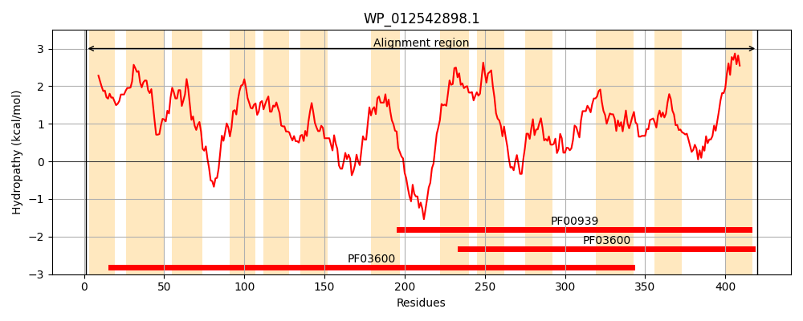
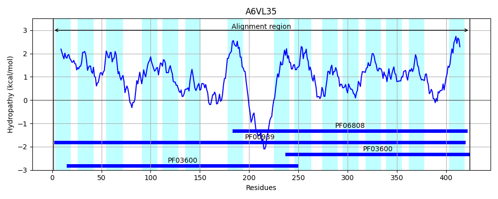
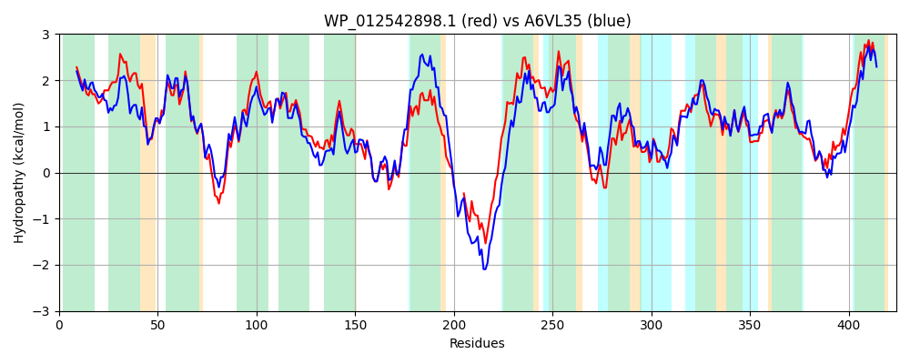

Hit Accession: A6VL35
Hit TCID: 2.A.47.5.3
Hit Description: gnl|BL_ORD_ID|658 gnl|TC-DB|A6VL35|2.A.47.5.3 Anion transporter OS=Actinobacillus succinogenes (strain ATCC 55618 / 130Z) GN=Asuc_0304 PE=4 SV=1
Mach Len: 424
e:0.000000
Query TMS Count : 13
Hit TMS Count: 15
TMS-Overlap Score: 10.800000
Predicted Substrates:CHEBI:30031;succinate(2-), CHEBI:29806;fumarate(2-)
BLAST Alignment:
Score: 1330 , Bit scores: 516 bits, E-value: 0.0e+00, Alignment length: 424, Percentage identity: 59
Query: 1 MSPVAITLSLLLFSIVMFVWEKIPLAATAMIVCIVLVVTGIFDVKTAFAGFINQNVILFVAMFVVGGALFETGVTDKIGGIVTRYARSEKQLIVIIMLVCGLLSGFLSNTGTAAVLIPVVIGAAIKSGYAQSRLLMPLAFASALGGNLSLIGSPGNLIAQSALEQVGQRFGFFEYAKLGIPMLLCGILYFLTIGYKLLPAK----SASSKANADNGRKISCPKYKQVIAVLVLVFTVLGMIFENIIGLPIAIIGSIGALFLVITGVITEKQAYQSIDSQTIFLFGGTLALAKALETTGAGEIMARSVIDLLGQQASPFLLLSSVLVISCALTNFMSNTATAALLMPIGLSIANSMGADPRAVLMAIVVGCSCAYATPVGTPANMMIFSAGGYRFMDYVRVGLPLIIISIIVSFILLPIFFPFYP 420
M+P AITL L+F+I+MF WEK+PLA TAM+V + L +TG+ K AF GF++ NVILFVAMFV+GGALFETG+ +KIGG+V+R+A SE++L+V++M++ G++SG LSNTGTAA+LIPV++G + KS +A+SRLLMP+AFAS LGGNLSLIGSP NL+ Q L Q G +FGFFEYA++G+P+L+ GI++F+ IGY+LLP + A + PK+KQ +++ VL+ T+L M+FE+ IG+ + + +GAL LVI VITEKQAYQ+IDSQ +FLF GTLALA AL+TTGAG +A +++ LG Q + +LLL ++LV+SC LTNFMSNTATAALL PIGLSIA+S+GADP+AVLMA+VVG SCA+ATP+ TPAN MI S G YRF DY + G+PLI+++I + ILLPI FPF+P
Sbjct: 1 MTPSAITLCFLVFAIIMFAWEKLPLAVTAMVVSVGLALTGVLSAKDAFMGFVDTNVILFVAMFVIGGALFETGMANKIGGVVSRFATSERKLMVVLMVITGVMSGVLSNTGTAAILIPVILGISAKSDFARSRLLMPMAFASTLGGNLSLIGSPNNLVVQGVLSQSGDKFGFFEYAEIGVPILIIGIIFFVLIGYRLLPTQLNLHVEQEDYQAFHNHHNHIPKWKQWLSLAVLIATLLAMVFEDFIGIKLYLSACVGALILVIMRVITEKQAYQAIDSQVVFLFAGTLALANALQTTGAGAQIAHTILGWLGAQPNSYLLLFTILVLSCVLTNFMSNTATAALLAPIGLSIAHSLGADPKAVLMAVVVGSSCAFATPIATPANTMILSVGHYRFADYAKAGVPLIVVTIAAAMILLPILFPFFP 424 | Protein Hydropathy Plots: |
|---|
|  |  |
Pairwise Alignment-Hydropathy Plot:
|
|---|
|  |